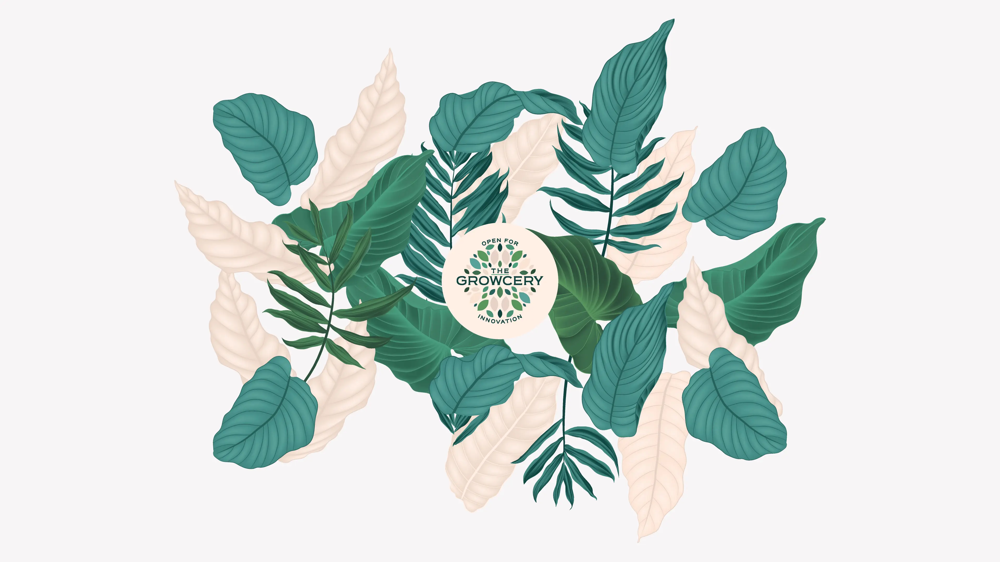
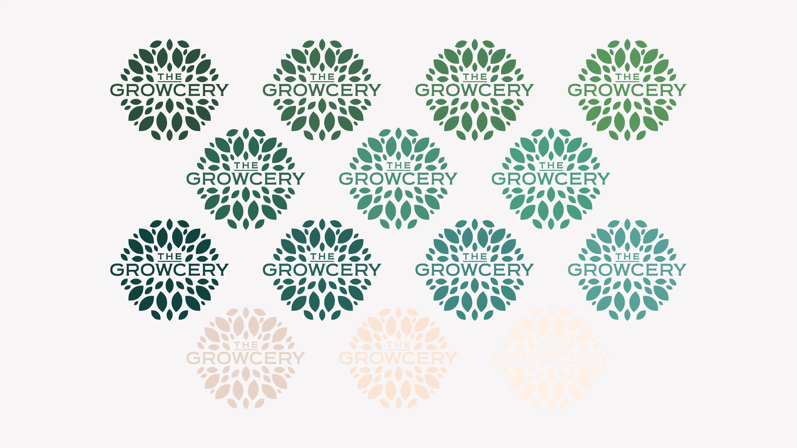
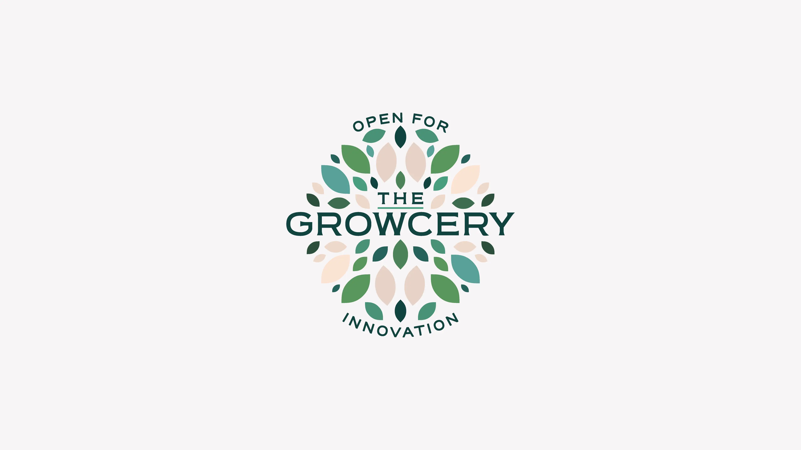
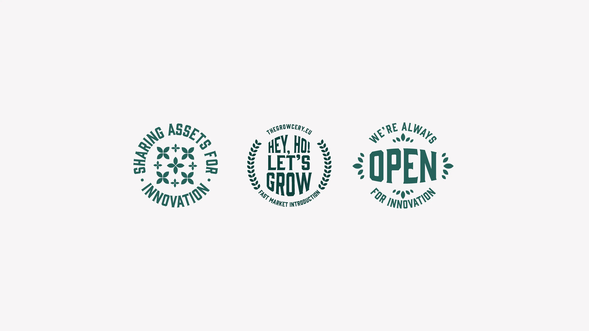
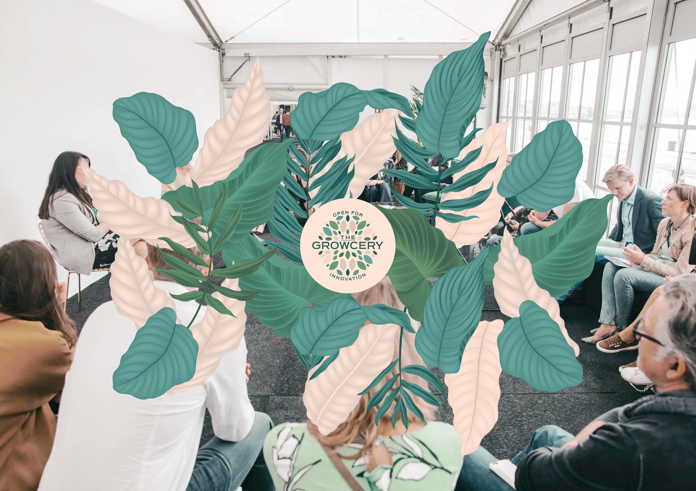
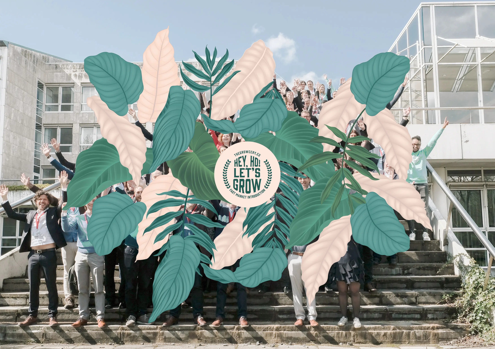

The Growcery
september 2018
Assets delen voor innovatie
- Oprichters
- P&G B-Ops The Bridge
- Bedrijf
- Procter and Gamble
- Sector
- FMCG
- Locatie
- Brussels Belgium

Over het merk
In de zomer van 2018 vroeg P&G aan Glossy Branding Agency om te helpen bij het bouwen, benoemen & visualiseren van hun nieuwe 'open innovation platform'. Voortbouwend op hun interne inqbet-strategie wilde P&G kennis delen en bundelen met andere bedrijven actief in de FMCG-markt. Glossy Branding Agency organiseerde 4 workshops met de stakeholders van P&G, B-Ops & The Bridge. Samen creëerden we een gloednieuw merk: The Growcery!
"The Growcery is een plek waar merken en start-ups de handen in elkaar slaan om het succes van consumentgerichte producten en businessmodellen te maximaliseren. Als Europees collaboratief innovatieplatform verbinden we innovatieve consumentenmerken en technologiestart-ups & scale-ups in een consumentgerichte community. Zo willen we de slaagkansen van nieuwe productlanceringen vergroten en de internationalisering van lokale start-ups & scale-ups versnellen, een win-win voor alle partijen"




